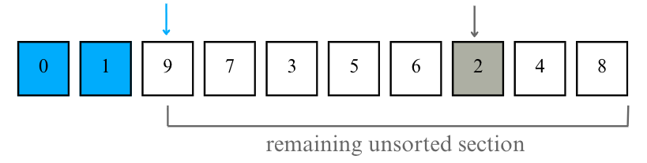
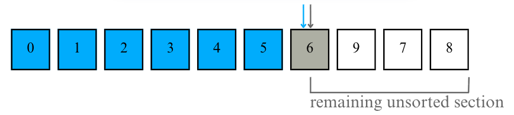
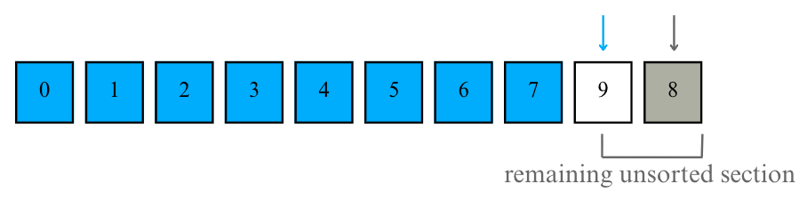
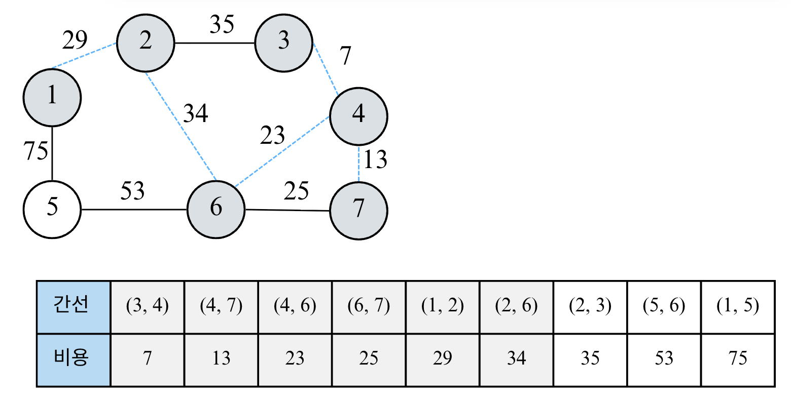
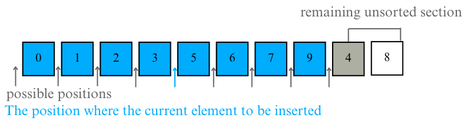
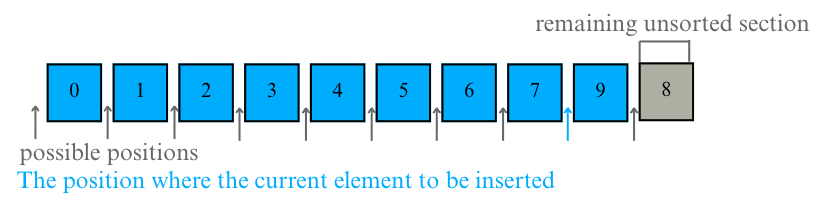
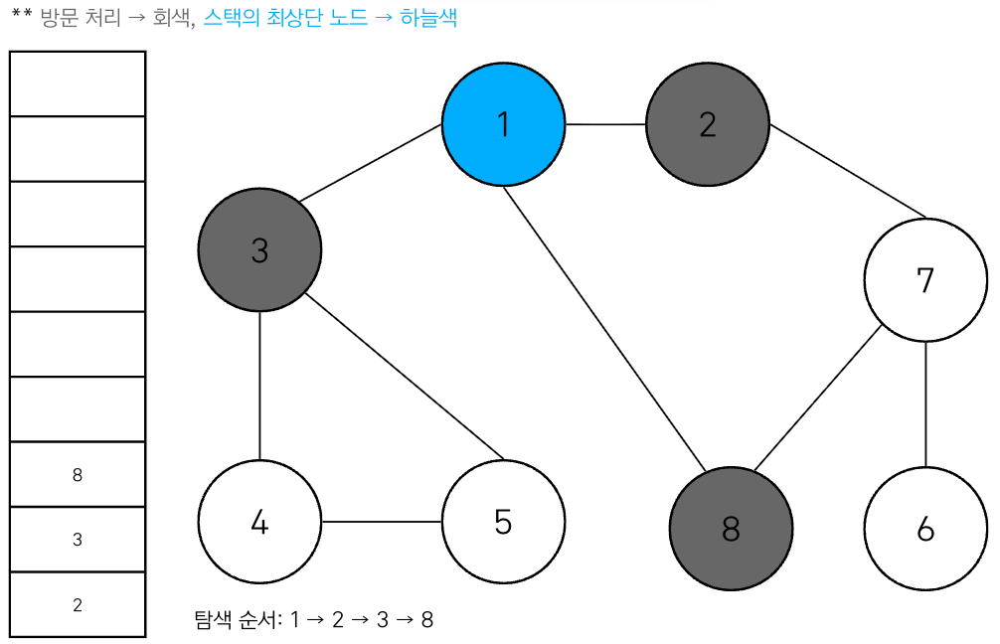
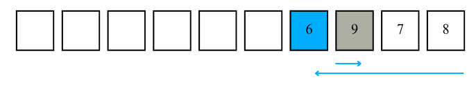
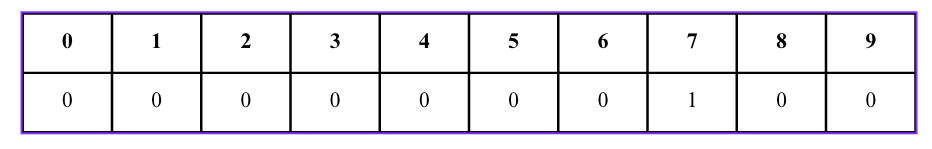

Lecture 6-1. 정렬#
정렬 (Sorting)이란 데이터를 특정한 기준에 따라서 순서대로 나열하는 것을 말한다. 정렬 알고리즘으로 데이터를 정렬하면 이후에 배울 이진 탐색 (Binary Search)이 가능해진다. 이번 수업에서는 총 4가지 정렬 (선택 정렬, 삽입 정렬, 퀵 정렬, 계수 정렬)에 대해서 배운다. 이 장에서 다루는 예제는 모두 오름차순 (Increasing order) 정렬을 수행한다고 가정한다. 내림차순 정렬은 리스트의 원소를 뒤집는 (Reverse) 메서드를 제공하기 때문에 그 방법을 사용하여 O(N) 시간 복잡도로 만들 수 있다.
Reversing ways in Python
# method 1
list1 = [1, 2, 5, 6]
reversed_list = list1[::-1]
print(reversed_list)
# method 2
list2 = [1, 3, 5, 6]
list2.reverse() # list의 built-in 함수인 reverse()를 사용하면 original data가 없어지는 단점이 존재.
print(list2)
slicing a list
슬라이싱이란, 리스트 아이템의 일부를 자르는 것이다. 형식은 다음과 같다.
slicing 방법
리스트변수[start:end:step]
항목 |
의미 |
기본값 step > 0 |
기본값 step < 0 |
중요포인트 |
|---|---|---|---|---|
start |
시작인덱스 |
0 |
-1 |
포함됨 |
end |
끝인덱스 |
len(arr) |
-(len(arr)+1) |
포함안됨 |
step |
간격 (양수면 오른쪽, 음수면 왼쪽으로 이동) |
1 |
1 |
방향 결정자 |
핵식 개념 정리
start, end, step 모두 생략 가능하다.
start와 end의 상대적 방향이 step과 맞아야한다.
오른쪽으로 갈때는 start < end 여야 값이 생기고,
왼쪽으로 갈때는 start > end여야 값이 생긴다.
이 조건이 안 맞는 경우 빈 리스트 ([ ])가 나온다.
슬라이싱의 예시를 이용하여, 실제 어떻게 동작하는지 알아보자
arr = [5, 7, 9, 0, 3, 1, 6, 2, 4, 8]
print(arr[:3]) # 인덱스 3 이전까지 오른쪽으로 1씩 이동하여 슬라이싱, 결과 [5, 7, 9]
print(arr[-3:]) # -3부터 끝까지 오른쪽으로 1씩 이동하여 슬라이싱, 결과 [2, 4, 8]
print(arr[:-3]) # 0부터 인덱스 -3 이전까지 오른쪽으로 1씩 이동하여 슬라이싱, 결과 [5, 7, 9, 0, 3, 1, 6]
print(arr[:-3:-1]) # 0부터 -3이전까지 왼쪽으로 1씩 이동하여 슬라이싱, 결과 [8, 4]
print(arr[:-3:-2]) # 0부터 -3이전까지 왼쪽으로 2씩 이동하여 슬라이싱, 결과 [8]
print(arr[:-5:-2]) # 0부터 -3이전까지 왼쪽으로 2씩 이동하여 슬라이싱, 결과 [8 ,2]
print(arr[:3:-1]) # 0부터 3이전까지 왼쪽으로 1씩 이동하여 슬라이싱, [8, 4, 2, 6, 1, 3]
print(arr[0:3:-1]) # step의 방향과 start end의 방향이 다름.
선택 정렬 (Selection Sort)#
선택 정렬은 매 스텝마다 가장 작은 것을 선택해 앞으로 보내는 과정을 반복 수행하는 알고리즘이다. 즉, 데이터가 무작위로 있을 때, ‘아직 정렬되지 않은 범위 속 가장 작은 데이터’를 선택해 ‘아직 정렬되지 않은 범위의 맨 앞에 있는 데이터’와 바꾸고, 그 다음 작은 데이터를 선택해 앞에서 두 번째 데이터와 바꾸는 과정을 반복한다. 이렇게 “데이터”를 “선택”하여 바꾸는 작업을 통해 정렬하는 알고리즘을 (데이터) 선택 정렬이라고 한다.
데이터의 개수를 N=10이라고 할때, 다음 예제를 확인해보자.
선택 정렬 예시#
앞으로 그림에서, 회색 카드는 ‘현재 정렬되지 않은 데이터 중에서 가장 작은 데이터’를 의미하며, 하늘색 카드는 ‘이미 정렬된 데이터’를 의미한다.
Step 1

초기 단계에서는 모든 데이터가 정렬되어 있지 않으므로, 전체 중에서 가장 작은 데이터를 선택한다.
‘7’: current element to be swapped (the first element in the remaining unordered section)
‘0’: smallest element in the remaining unsorted section
위의 데이터 ‘0’과 ‘7’를 바꾼다.
Step 2

데이터가 정렬되어 있지 않은 범위 중 가장 작은 데이터를 선택하여 현재 원소와 바꾼다.
‘5’: current element to be swapped (the first element in the remaining unordered section)
‘1’: smallest element in the remaining unsorted section
Step 3

데이터가 정렬되어 있지 않은 범위 중 가장 작은 데이터를 선택하여 현재 원소와 바꾼다.
‘9’: current element to be swapped (the first element in the remaining unordered section)
‘2’: smallest element in the remaining unsorted section
Step 4
데이터가 정렬되어 있지 않은 범위 중 가장 작은 데이터를 선택하여 현재 원소와 바꾼다.
‘7’: current element to be swapped (the first element in the remaining unordered section)
‘3’: smallest element in the remaining unsorted section
Step 5
데이터가 정렬되어 있지 않은 범위 중 가장 작은 데이터를 선택하여 현재 원소와 바꾼다.
‘7’: current element to be swapped (the first element in the remaining unordered section)
‘4’: smallest element in the remaining unsorted section
Step 6
데이터가 정렬되어 있지 않은 범위 중 가장 작은 데이터를 선택하여 현재 원소와 바꾼다.
‘5’: current element to be swapped (the first element in the remaining unordered section)
‘5’: smallest element in the remaining unsorted section
Step 7

데이터가 정렬되어 있지 않은 범위 중 가장 작은 데이터를 선택하여 현재 원소와 바꾼다.
‘6’: current element to be swapped (the first element in the remaining unordered section)
‘6’: smallest element in the remaining unsorted section
Step 8
데이터가 정렬되어 있지 않은 범위 중 가장 작은 데이터를 선택하여 현재 원소와 바꾼다.
‘9’: current element to be swapped (the first element in the remaining unordered section)
‘7’: smallest element in the remaining unsorted section
Step 9

데이터가 정렬되어 있지 않은 범위 중 가장 작은 데이터를 선택하여 현재 원소와 바꾼다.
‘9’: current element to be swapped (the first element in the remaining unordered section)
‘8’: smallest element in the remaining unsorted section
Step 10
데이터가 정렬되어 있지 않은 범위 중 가장 작은 데이터를 선택하여 현재 원소와 바꾼다.
9’: current element to be swapped (the first element in the remaining unordered section)
‘9’: smallest element in the remaining unsorted section
선택 정렬 코드 및 시간 복잡도#
selection sort source code
arr = [7, 5, 9, 0, 3, 1, 6, 2, 4, 8]
for i in range(len(arr)):
min_index = i
for j in range(i+1, len(arr)):
if arr[min_index] > arr[j]:
min_index = j
# SWAP
arr[i], arr[min_index] = arr[min_index], arr[i]
print(arr)
위의 구현 방식으로 연산 횟수는 (N) + (N-1) + (N-2) + … + 2 로 볼 수 있다. 따라서 N(N+1)/2로 연산을 수행한다고 가능하면 이는 간단히 O(\(N^2\))로 표현할 수 있다. 이러한 선택 정렬은 기본 정렬 라이브러리를 포함하여 뒤에서 다룰 알고리즘과 비교했을 때 매우 비효율적이다. 다만, 특정한 리스트에서 가장 적은 데이터를 찾는 일이 코딩 테스트에서 잦으므로 선택 정렬 소스코드 형태에 익숙해질 필요가 있다. 자주 작성하여서 선택 정렬 소스코드에 익숙해지자.
삽입 정렬 (Insertion Sort)#
삽입 정렬은 데이터를 하나씩 확인하여, 각 데이터를 삽입하기에 적절한 “위치”는 어디일까? 라는 접근 방법을 가진 알고리즘이다. 삽입 정렬은 필요할 때만 위치를 바꾸므로 ‘데이터가 거의 정렬되어 있을 때’ 훨씬 효율적이다. 위에서 살펴본 것처럼 선택 정렬은 현재 데이터의 상태와 상관없이 무조건 모든 원소를 비교하고 위치를 바꾸지만 삽입 정렬은 아니다.
삽입 정렬 특징
특정한 데이터가 적절한 위치에 들어가기 이전에, 그 앞까지의 데이터는 이미 정렬되어 있다고 가정
선택 정렬처럼 언제나 모든 원소를 비교하고 위치를 바꾸지 않는다.
삽입 정렬 예시#
Step 1

삽입 정렬은 두 번째 데이터부터 시작한다. 왜냐하면 첫번째 데이터는 그 자체로 정렬되어 있다고 판단하기 때문이다.
Step 2
첫 번째 데이터 ‘7’은 그 자체로 정렬되어 있다고 판단하고, 두 번째 데이터인 ‘5’가 어떤 위치가 들어갈지 판단한다. ‘7’의 왼쪽으로 들어가거나 (기존 ‘7’의 위치) 혹은 오른쪽으로 들어가는 두 경우 (현재 ‘5’의 위치)만 존재한다. 우리는 카드를 오름차순으로 정렬하고자 하므로 ‘7’의 왼쪽에 삽입한다.
** 그림에서 인덱스는 현재 수가 있는 자리의 왼쪽 화살표로 표시됨.
Step 3
 ‘9’가 들어갈 위치를 판단해야한다. 삽입될 수 있는 총 위치는 3가지이며 파란색 화살표로 9가 들어갈 위치를 표시하지만, 원래 자리이기 때문에 그대로둔다.
‘9’가 들어갈 위치를 판단해야한다. 삽입될 수 있는 총 위치는 3가지이며 파란색 화살표로 9가 들어갈 위치를 표시하지만, 원래 자리이기 때문에 그대로둔다.
Step 4
 ‘0’이 들어갈 위치를 판단해야한다. 파란색 화살표 자리 즉, 현재 ‘5’가 있는 위치에 삽입한다.
‘0’이 들어갈 위치를 판단해야한다. 파란색 화살표 자리 즉, 현재 ‘5’가 있는 위치에 삽입한다.
Step 5
 ‘3’이 들어갈 위치를 판단해야한다. 파란색 화살표 자리 즉, 현재 ‘5’가 있는 위치에 삽입한다.
‘3’이 들어갈 위치를 판단해야한다. 파란색 화살표 자리 즉, 현재 ‘5’가 있는 위치에 삽입한다.
Step 6
 ‘1’이 들어갈 위치를 판단해야한다. 파란색 화살표 자리 즉, 현재 ‘3’이 있는 위치에 삽입한다.
‘1’이 들어갈 위치를 판단해야한다. 파란색 화살표 자리 즉, 현재 ‘3’이 있는 위치에 삽입한다.
중략 중간 과정을 생략한다.
Step 7  ‘4’가 들어갈 위치를 판단한다. ‘5’의 자리에 삽입한다.
Step 8  ‘8’이 들어갈 위치를 판단한다. ‘9’의 자리에 삽입한다.
Step 9 이와 같이 적절한 위치에 삽입하는 과정을 N-1번 반복하게 되면 위와 같이 모든 데이터가 정렬된 것을 확인할 수 있다.
삽입 정렬 코드 및 시간 복잡도#
삽입 정렬에서, 정렬이 이루어져 있는 원소들 (파란색)은 항상 오름차순을 유지하고 있기 땜누에, 현재 특정한 데이터가 삽입될 위치를 선정할때, (삽입될 위치를 찾기 위하여 왼쪽으로 한칸씩 이동할때) 삽입될 데이터보다 작은 데이터를 만나면 그 위치에서 멈추면 된다.
code for insertion sort
arr = [7, 5, 9, 0, 3, 1, 6, 2, 4, 8]
for i in range(1, len(arr)):
for j in range(i, 0, -1): # 인덱스 i부터 1까지 감소하며 반복하는 문법
if arr[j] < arr[j-1]: # 한 칸씩 왼쪽으로 이동
arr[j], arr[j-1] = arr[j-1], arr[j]
else: # 자기보다 작은 데이터를 만나면 그 위치에서 멈춤
break
print(arr)
위의 코드에서 드는 질문은, 왜 list.insert(index, value) 함수를 쓰지 않는가?이다. 즉, 최종 위치를 찾아서 그곳에 현재 원소를 넣으면 안되는가? 아래 두 가지 이유를 들 수 있다.
(1) 시간 복잡도 면에서 비슷하거나 더 느림
insert()를 쓰면 내부적으로 리스트의 모든 원소를 한 칸씩 뒤로 미는 연산(O(N)) 이 발생합니다.
그런데 어차피 삽입 정렬도 O(N²)이기 때문에, 굳이 insert()로 더 많은 내부 처리를 할 필요가 없어요.
(2) 교환(swap) 기반 구현이 구조적으로 더 명확함
삽입 정렬은 배열을 직접 순회하면서 인접 원소를 비교하고 교환하는 구조로 되어 있어요.
이 방식이 언어나 자료구조가 달라도 동일하게 동작하는 일반적인 알고리즘 형태라서, 교육·면접용 코드에서도 swap으로 표현합니다.
삽입 정렬의 시간 복잡도는 O(N^2)으로, 선택 정렬과 마찬가지로 반복문이 2번 중첩되어 있다. 하지만 꼭 기억해야할 점은 선택 정렬과 다르게, 현재 리스트의 데이터가 거의 정렬 되어 있는 상태라면 최선의 경우 O(N)의 시간 복잡도를 가질 수 있다. 다음에 배울 퀵 정렬과 비교했을 때 보통은 삽입 정렬이 비효율적이나 정렬이 거의 되어 있는 상황에서는 퀵 정렬 알고리즘보다 더 강력하다.
Algorithm summary of insertion sort
삽입 정렬 알고리즘 정리
리스트의 두 번째 원소부터 시작해서, 그 앞쪽 부분(이미 정렬된 부분) 에서 자신이 들어갈 적절한 위치를 찾은 뒤 삽입하는 방식
즉, arr[0:i] 구간은 항상 정렬된 상태를 유지하면서 arr[i]를 그 안에 알맞게 “넣는” 과정을 반복합니다.
시간 복잡도: O(\(N^2\))
퀵 정렬 (Quick Sort)#
퀵 정렬은 정렬 알고리즘 중에서 가장 많이 사용되는 알고리즘이다. 퀵 정렬은 기준을 설정한 다음 큰 수와 작은 수를 교환한 후 리스트를 반으로 나누는 방식으로 동작한다. 이해하는데 오래걸리지만, 원리를 이해하면 병합 정렬, 힙 정럴 등 다른 고급 정렬 기법에 비해 쉽게 소스코드를 작성할 수 있다.
피벗(Pivot)이라는 개념이 등장하는데, 큰 숫자와 작은 숫자를 교환할 때, 교환하기 위한 ‘기준’을 바로 피벗이라고 표현한다. 퀵 정렬을 수행하기 전에는 피벗을 어떻게 설정할 것인지 미리 명시해야 한다. 사실 퀵 정렬은 피벗 설정, 리스트 분할 방법에 따라 여러 가지 방식으로 나뉘는데, 오늘 수업에서는 가장 대표적인 분할 방식인 호어 분할(Hoare Partition) 방식을 기준으로 퀵 정렬을 설명하겠다.
호어 분할 방식
피벗 설정: 리스트에서 첫 번째 데이터를 피벗으로 정한다.
정렬 방식: 왼쪽에서부터 피벗보다 큰 데이터를 찾고, 오른쪽에서부터 피벗보다 작은 데이터를 찾는다. 그 다음 큰 데이터와 작은 데이터의 위치를 서로 교환해준다. 이 과정을 반복하면 ‘피벗’에 대하여 정렬이 수행된다.
다음과 같이 초기 데이터가 구성되어있다고 가정해보자. 해당 알고리즘을 파트 1, 2, 3로 나누어서 살펴보겠다.
파트 1#
Step 1

피벗: 리스트의 첫 번째 데이터인 ‘5’
피벗의 왼쪽: 왼쪽에서부터 ‘5’보다 큰 데이터 선택 ‘7’
피벗의 오른쪽: 오른쪽에서부터 ‘5’보다 작은 데이터 선택 ‘4’
swap: 위에서 선택된 ‘7’과 ‘4’의 위치를 서로 변경
Step 2
피벗: 리스트의 첫 번째 데이터인 ‘5’
피벗의 왼쪽: 아까 바꿨던 위치에서부터 ‘5’보다 큰 데이터 선택 ‘9’
피벗의 오른쪽: 아까 바꿨던 위치에서부터’5’보다 작은 데이터 선택 ‘2’
swap: 위에서 선택된 ‘9’과 ‘2’의 위치를 서로 변경
Step 3

피벗: 리스트의 첫 번째 데이터인 ‘5’
피벗의 왼쪽: 아까 바꿨던 위치에서부터 ‘5’보다 큰 데이터 선택 ‘6’
피벗의 오른쪽: 아까 바꿨던 위치에서부터’5’보다 작은 데이터 선택 ‘1’ -> 이 때 현재 왼쪽에서부터 찾는 값과 오른쪽에서부터 찾는 값의 위치가 서로 엇갈린 것을 알 수 있다. 이렇게 두 값의 위치가 엇갈린 경우에는 ‘작은 데이터’와 ‘피벗’의 위치를 서로 변경한다.
swap: 위에서 선택된 ‘9’과 ‘2’의 위치를 서로 변경
Step 4: 분할 완료 
이와 같이 ‘피벗’이 이동한 상태에 도달하면 분할 완료이다. 분할 완료 후에는 위의 그림처럼 피벗 데이터의 왼쪽 데이터는 모두 피벗 값인 ‘5’보다 작고, 오른쪽에 있는 데이터는 모두 ‘5’보다 크다.
즉, 분할 (Divide) 또는 파티션 (Partition)이란, 피벗의 왼쪽에는 피벗보다 작은 데이터가 위치하고, 피벗의 오른쪽에는 피벗보다 큰 데이터가 위치하도록 하는 작업을 일컫는다.
파트 2: 분할 완료된 피벗의 왼쪽 리스트#
분할 완료된 피벗의 왼쪽 리스트에서는 다음과 같이 정렬이 진행되며 구체적인 정렬과정은 동일하다.

파트 3: 분할 완료된 피벗의 오른쪽 리스트#
분할 완료된 피벗의 오른쪽 리스트에서는 다음과 같이 정렬이 진행되며 구체적인 정렬과정은 동일하다. 아래 그림에서는 첫 단계에서, 오른쪽과 왼쪽의 데이터가 서로 엇갈리는 지점에는 작은 데이터와 피벗의 데이터가 동일하다. 따라서, swap하고 난 후 분할 완료된 리스트는 첫 리스트와 동일함을 알 수 있다. 
특정한 리스트에서 피벗을 설정하여 정렬을 수행한 이후, 피벗을 기준으로 왼쪽 리스트와 오른쪽 리스트에서 각각 다시 정렬 수행한다. 재귀 함수와 동작 원리가 같고, 따라서, 종료 조건이 필요하다. 퀵 정렬이 끝나는 조건은 리스트의 개수가 1개인 경우이다. 리스트의 원소가 1개라면, 이미 정렬되어 있다고 간주할 수 있으며 분할이 불가능하다.
퀵 정렬 전체 정리 과정 그림#
퀵 정렬 소스코드 및 시간 복잡도#
source code for Quick sort
arr = [5, 7, 9, 0, 3, 1, 6, 2, 4, 8]
def quick_sort(array, start, end):
if start >= end: # Stop when the subarray has one or zero elements
return
pivot = start
left = start + 1
right = end # inclusive
# pivot(start) _ _ _ _ end
while True:
# range check: end position까지 pivot과 비교 필요
# value check: Move left pointer until you find an element greater than the pivot
while left <= end and array[left] <= array[pivot]:
left += 1
# range check: right의 range는 start보다 커야함.
# value check: Move right pointer until you find an element smaller than the pivot
while right > start and array[right] >= array[pivot]:
right -= 1
if left > right:
array[right], array[pivot] = array[pivot], array[right]
break
else:
array[left], array[right] = array[right], array[left]
# After partitioning, recursively sort the left and right subarrays
# partition이 끝난 시점에 right가 pivot이 들어갈 정확한 위치를 가리킵니다.
quick_sort(array, start, right - 1)
quick_sort(array, right + 1, end)
quick_sort(arr, 0, len(arr) - 1)
print(arr)
퀵 정렬의 평균 시간 복잡도는 O(NlogN)이다. 앞선 두 정렬 알고리즘에 비해 매우 빠른 편이다. 간단히 이런 시간 복잡도를 가지는 이유에 대해서 설명해보자면, 데이터의 개수가 8개라고 가정하고 다음과 같이 정확히 절반씩 나눈다고 도식화를 해보자. 이때 ‘높이’를 확인해보면, 데이터의 개수가 N개일 때 높이는 약 logN이라고 판단할 수 있다. Here, the “height” of the recursion tree refers to the depth of recursive partitioning, not the number of swaps or partitions performed.
즉,
한 번의 분할(partition) 과정에서 모든 원소(N개) 를 한 번씩 비교하므로,한 단계(partition depth)당 O(N) 의 시간이 걸립니다.
이상적인 경우(매번 절반씩 나뉜다면), 전체 트리의 높이는 log₂N 단계가 됩니다.
따라서 총 수행 시간은 O(N) * O(log N) = O(N log N) 이 됩니다.
즉, 아래 그림에서 “높이 = 재귀 깊이(분할 단계 수)”이고, 각 단계마다 N개의 비교가 일어나는 구조입니다.
퀵 정렬의 재귀 각 단계에서 처리되는 총 원소 수의 합은 항상 N이므로, 전체 시간은 O(N)(단계당) × O(log N)(단계 수) = O(N log N) 이 된다.
아래의 재귀 트리 (recursion tree)로 보면 이해가 쉽다.
깊이 |
부분 배열 개수 |
각 배열의 크기 |
그 깊이의 총 연산량 |
|---|---|---|---|
0 |
1 |
N |
N |
1 |
2 |
N/2 |
2 * (N/2) = N |
2 |
4 |
N/4 |
4 * (N/4) = N |
… |
… |
… |
… |
log N |
N |
1 |
N |
일반적으로 컴퓨터 과학에서 log의 의미는 밑이 2인 로그를 의미한다. 즉, \(log_{2}N\)을 의미하며 데이터의 개수 1000일 때, \(log_{2}N\)는 10 정도이다. 즉, N=1000일 때 10은 상대적으로 매우 작은 수이다. 데이터의 개수가 많을 수록 차이는 매우 극명하게 드러난다.
다만, 퀵 정렬의 시간 복잡도에 대하여 한 가지 기억해둘 점이 있다. 바로 평균적으로 시간 복잡도가 O(NlogN)이지만 최악의 경우 시간 복잡도가 O(\(N^2\))라는 것이다. 데이터가 무작위로 입력되는 경우 퀵 정렬은 빠르게 동작할 확률이 높다. 하지만, 우리가 사용한 방법처럼 리스트의 가장 왼쪽 데이터를 피벗으로 삼을 때, ‘이미 데이터가 정렬되어 있는 경우’에는 매우 느리게 동작한다. 즉, 삽입 정렬은 이미 데이터가 정렬되어 있는 겨웅에는 매우 빠르게 동작하고, 퀵 정렬은 그와 반대이다.
실제로 파이썬에서 기본 정렬 라이브러리를 이용하면 O(NlogN)을 보장해주기 때문에 크게 걱정하지 않아도 된다.
병합 정렬 (Merge sort)#
우선 병합 정렬과 퀵 정렬을 비교하면 다음과 같다.
구분 |
병합 정렬 (Merge Sort) |
퀵 정렬 (Quick Sort) |
|---|---|---|
정렬방식 |
분할 정복 (Divide & Conquer) -> 반으로 나누고, 정렬된 결과를 병합 (merge) |
분할 정복 (Divide & Conquer) -> 피벗(pivot)을 기준으로 작은 값/큰 값으로 분할 |
기준 |
단순히 절반으로 나눔 |
피벗 값에 따라 나눔 |
정렬 과정 |
분할 후 -> 병합하며 정렬 |
분할하면서 -> 정렬 |
시간 복잡도 |
항상 O(NlogN) |
평균 O(NlogN), 최악 O(\(N^2\)) |
공간 복잡도 |
O(N) (추가배열필요) |
O(logN) (재귀 스택만 사용) |
정렬 안정성 |
Stable (동일 값의 순서 유지됨) |
Unstable |
적합한 경우 |
대용량 데이터, 외부 정렬 (파일 단위 정렬 등) |
메모리 제한이 있는 경우, 평균 성능이 중요할 때 |
위의 테이블을 요약하자면, 병합 정렬을 항상 O(NlogN)을 보장하지만, 안정 정렬이지만, 메모리 공간을 추가로 사용한다. 또한 퀵 정렬은 보통 더 빠르지만 (캐시 효율, in-place), 데이터가 편향되면 O(\(N^2\))로 느려진다.
이때 Stable Sort의 의미는 동일한 값을 가진 원소의 기존 순서가 유지되는 것을 의미한다. 예를 들어, 아래처럼 정렬할 때,
[(Alice, 90), (Bob, 90), (Chris, 80)]
점수를 기준으로 오름차순 정렬하면
Stable sort라면
[(Chris, 80), (Alice, 90), (Bob, 90)]Unstable sort라면
[(Chris, 80), (Bob, 90), (Alice, 90)]로 순서가 바뀔수도 있음.병합 정렬: 비교할 때
<=로 구현하면 Stable퀵정렬: 피벗 swap과정에서 순서가 깨지므로 Unstable
알고리즘의 작동 순서는 다음과 같다. 반으로 나누고 -> 각각 정렬 -> 다시 합치기 과정을 반복한다.
분할 (Divide): 리스트를 반으로 나눈다.
[8, 3, 5, 4, 7, 6, 1, 2] → [8,3,5,4] + [7,6,1,2]
정복 (Conquer): 각 부분리스트를 재귀적으로 병합 정렬한다.
[8,3,5,4] → [3,4,5,8]
[7,6,1,2] → [1,2,6,7]
결합 (Combine/Merge): 두 정렬된 리스트를 하나로 병합한다.
[3,4,5,8] + [1,2,6,7] → [1,2,3,4,5,6,7,8]
병합 정렬 source code 및 시간 복잡도#
계수 정렬 (Count sort)#
계수 정렬 (count sort) 알고리즘은 특정한 조건이 부합할 때만 사용할 수 있지만 매우 빠른 정렬 알고리즘이다. 계수 정렬은 데이터의 크기가 제한되어 있을 때에 한해서, 데이터의 개수가 매우 많더라도 빠르게 동작한다. 다음은 특정 조건에 대한 기술이다.
데이터의 개수가 N, 데이터 중 최댓값이 K일때, 데이터의 크기 범위가 제한되어 ‘정수 형태’로 표현할 수 있을때만 사용할 수 있다.
가장 큰 데이터와 가장 작은 데이터의 차이가 너무 크다면 계수 정렬은 사용할 수 없다. (모든 범위를 담을 수 있는 크기의 리스트를 선언해야하기 때문, 그 차이가 예를 들어 1,000,000이라면 총 1,000,001개의 데이터가 들어갈 수 있는 리스트를 초기화해야한다.)
위의 조건을 만족하는 예시는 예를 들어, 0이상 100이하인 성적 데이터를 정렬할때 계수 정렬이 효과적일 수 있다. 계수 정렬은 앞서 다루었던 3가지 정렬 알고리즘처럼 직접 데이터의 값을 비교한 뒤에 위치를 변경하며 정렬하는 방식 (비교 기반의 정렬 알고리즘)이 아니다.
계수 정렬 예시#
Step 1 초기 단계: 7 5 9 0 3 1 6 2 9 1 4 8 0 5 2 먼저 가장 큰 데이터와 가장 작은 데이터의 범위가 모두 담길 수 있도록 하나의 리스트를 생성한다. 현재 예시에선 가장 큰 데이터는 ‘9’이고 가장 작은 데이터가 ‘0’이다. 우리가 정렬한 데이터의 범위를 모두 포함하도록 리스트를 생성해야하므로 크기가 10인 리스트를 선언하면 된다. 리스트의 모든 값이 0이 되도록 초기화한다.
Step 2 7 5 9 0 3 1 6 2 9 1 4 8 0 5 2 
데이터를 하나씩 확인하며 데이터의 값과 동일한 인덱스 데이터를 1씩 증가시킨다.
Step 3 7 5 9 0 3 1 6 2 9 1 4 8 0 5 2
Step 4 7 5 9 0 3 1 6 2 9 1 4 8 0 5 2
Step 14 7 5 9 0 3 1 6 2 9 1 4 8 0 5 2 결과적으로 위의 리스트에는 각 데이터가 몇 번 등장했는지 그 횟수가 기록된다. 이 리스트에 저장된 데이터 자체가 정렬된 형태 그 자체라고 할 수 있다. 결과를 출력하고 싶으면 리스트의 첫 번째 데이터부터 하나씩 그 값만큼 인덱스를 출력하면 된다.
계수 정렬 코드 및 시간 & 공간 복잡도#
source code for count sort
# 모든 원소의 값이 0보다 크거나 같다고 가정
arr = [7, 5, 9, 0, 3, 1, 6, 2, 9, 1, 4, 8, 0, 5, 2]
# 모든 범위를 포함하는 리스트 선언 (모든 값은 0으로 초기화)
count = [0] *(max(arr)+1)
for i in range(len(arr)):
count[arr[i]] += 1 # 각 데이터에 해당하는 인덱스의 값 증가
for i in range(len(count)): # 리스트에 기록된 정렬 정보 확인
for j in range(count[i]):
print(i, end= ' ') # 띄어쓰기를 구분으로 등장한 횟수만큼 인덱스 출력
모든 데이터가 양의 정수인 상황에서 데이터의 개수를 N, 데이터 중 최댓값의 크기를 K라고 할때, 계수 정렬의 시간복잡도는 O(N+K)이다. 계수 정렬은 앞에서부터 데이터를 하나씩 확인하면서 리스트에서 적절한 인덱스의 값을 1씩 증가시킬 뿐만 아니라, 추후에 리스트의 각 인덱스에 해당하는 값들을 확인할 때 데이터 중 최댓값의 크기만큼 반복을 수행해야하기 때문이다.
계수 정렬의 공간복잡도는 O(N+K)이다. 결과를 출력할 리스트를 따로 만들면 N + 각 정수값(0~K)의 등장 횟수 저장하는 카운트 배열(K)이 필요하기 때문이다.
파이썬의 정렬 라이브러리#
파이썬은 기본 정렬 라이브러리인 sorted() 함수를 제공한다. sorted() 는 퀵 정렬과 동작 방식이 비슷한 병합 정렬을 기반으로 만들어졌는데, 병합 정렬은 일반적으로 퀵 정렬보다 느리지만 최악의 경우에도 시간 복잡도 O(NlogN)을 보장한다. sorted() 함수는 리스트, 딕셔너리 자료형 등을 입력받아서 정렬된 결과를 출력한다. 집합 자료형이나 딕셔너리 자료형을 입력받아도 반환되는 결과는 리스트 자료형이다.
sorted() source code
arr = [7, 5, 9, 0, 3, 1, 6, 2, 9, 1, 4, 8, 0, 5, 2]
result = sorted(arr)
print(result)
또한, sorted()를 이용할때 key 매개변수를 입력으로 받을 수 있다. key 값으로는 하나의 함수가 들어가야 하며 이는 정렬 기준이 된다. 예를 들어, 리스트의 데이터가 튜플로 구성되어 있는 경우, 각 데이터의 두 번째 원소를 기준으로 정렬을 하고 싶다고 할때, 다음과 같이 소스코드를 작성할 수 있다.
array = [('바나나', 2), ('사과', 5), ('당근', 3)]
result = sorted(array, key=lambda x: x[1])
print(result)
람다 함수에 대한 설명은 아래를 참고하자.
lambda function
파이썬의 람다 함수는 “한 줄짜리 함수”를 만들 때 자주 쓰이는 문법이다. 이 함수는 익명 함수 (anonymous function) 라고도 불린다. def 키워드 대신 lambda를 써서 한 줄로 함수를 정의한다.
lambda 매개변수들: 표현식
예를 들어,
f = lambda x: x +10
print(f(5)) # 15
위의 코드에서 lambda x: x +10은 def f(x): return x + 10`과 완전히 동일한 기능을 한다.
람다 함수는 짧고 일회성으로 쓸 때 유용한데, 특히 함수형 프로그래밍 도구 (map, sorted 등)에서 자주 사용된다. lambda는 “표현식(expression)”만 가능하고, 여러 줄 (if, for, return)은 불가하다.
아래의 활용 예시들을 간단히 살펴보자.
students = [("Jane", 22), ("Tom", 19), ("Alice", 24)]
# 나이를 기준으로 오름차순 정렬
sorted_students = sorted(students, key=lambda x: x[1])
print(sorted_students)
# [('Tom', 19), ('Jane', 22), ('Alice', 24)]
numbers = [1, 2, 3, 4, 5]
squared = list(map(lambda x: x ** 2, numbers))
print(squared) # [1, 4, 9, 16, 25]
리스트 변수의 경우 내부 원소를 바로 정렬할 수도 있는데, 리스트 객체의 내장 함수인 sort()를 사용하면 된다. 이를 이용하면 별도의 정렬된 리스트가 반환되지 않고 내부 원소가 바로 정렬된다. 리스트 객체의 내장함수 sort()도 key 매개변수를 입력으로 받을 수 있다.
arr = [7, 5, 9, 0, 3, 1, 6, 2, 4, 8]
arr.sort()
print(arr)
정렬 라이브러리는 항상 최악의 경우에도 시간 복잡도 O(NlogN)을 보장한다.
정리#
문제에서 별도의 요구가 없다면, 단순히 정렬해야하는 상황에서는 기본 정렬 라이브러리를 사용하고, 데이터의 범위가 한정되어 있으며 더 빠르게 동작해야하는 경우에는 계수 정렬을 이용하자.
코딩 테스트에서 정렬 알고리즘이 사용되는 경우를 일반적으로 3가지 문제 유형으로 나타낼 수 있다.
정렬 라이브러리로 풀 수 있는 문제: 단순히 정렬 기법을 알고 있는 문제로 기본 정렬 라이브러리 사용법을 숙지하고 있으면 된다.
정렬 알고리즘의 원리에 대해서 물어보는 문제: 선택, 삽입, 퀵 정렬 등의 원리를 숙지하자.
더 빠른 정렬이 필요한 문제: 퀵 정렬 기반 기법이 아닌, 계수 정렬 등의 다른 정렬 알고리즘을 이용하거나 문제에서 기존에 알려진 알고리즘의 구조적인 개선을 거쳐야 풀 수 있다.
Summary
ascending order를 기준으로,
선택 정렬: swap할 가장 작은 “데이터”를 선택
삽입 정렬: swap할 “인덱스”를 선택
퀵 정럴: 특정한 리스트에서 피벗을 설정하여 정렬을 수행한 이후 (partitioning), 피벗을 기준으로 왼쪽 리스트와 오른쪽 리스트에서 각각 다시 정렬 수행.
계수 정렬: 데이터를 하나씩 확인하며 데이터의 값과 동일한 인덱스 데이터를 1씩 증가시킨다.
예시 문제#
1. Merge sorted array#
solution
class Solution:
def merge(self, nums1: List[int], m: int, nums2: List[int], n: int) -> None:
"""
Do not return anything, modify nums1 in-place instead.
"""
# Initialize pointers for the last valid elements in nums1 and nums2
num1_r = m - 1
num2_r = n - 1
# Pointer for the last position in the merged array
whole_idx = m + n - 1
# Merge nums1 and nums2 from the back
while num1_r >= 0 and num2_r >= 0:
# Compare the last elements of both arrays
if nums1[num1_r] < nums2[num2_r]:
# If nums2 element is larger, place it at the current last position
nums1[whole_idx] = nums2[num2_r]
num2_r -= 1
else:
# Otherwise, place nums1 element at the current last position
nums1[whole_idx] = nums1[num1_r]
num1_r -= 1
whole_idx -= 1
# If there are remaining elements in nums2,
# copy them to the beginning of nums1.
# (No need to handle nums1's remaining part since they are already in place)
if num1_r < 0:
nums1[:(num2_r + 1)] = nums2[:(num2_r + 1)]
두 개의 array는 이미 ascending order로 정렬되어 있다. 이를 이용하여 아래처럼 풀 수 있다.
이 코드는 뒤쪽에서부터 채워나가는 방식을 사용합니다.(whole_idx는 nums1의 맨 끝 인덱스부터 시작)
이렇게 하면 별도의 임시 배열을 만들지 않고 in-place 정렬이 가능합니다.
num1_r < 0 인 경우는 nums2의 값이 모두 더 작았던 상황으로, 남은 nums2 원소들을 앞부분에 복사해야 합니다.
반대로 num2_r < 0이면, nums1에 남은 값들은 이미 제자리에 있으므로 추가 작업이 필요 없습니다.
2. Majority Element#
solution1
class Solution:
def majorityElement(self, nums: List[int]) -> int:
count_array = []
# nums[i]는 음수 혹은 양수
max_num = nums[0]
max_count = 1
count_dict = dict()
for num in nums:
if num not in count_dict:
count_dict[num] = 1
else:
count_dict[num] += 1
if max_count < count_dict[num]:
max_count = count_dict[num]
max_num = num
return max_num
Boyer–Moore Voting 방식으로 최적으로 풀 수 있다. Boyer–Moore Voting Algorithm은 배열에서 다수 원소를 찾기 위해 투표 상쇄 원리를 이용한 O(N)·O(1) 알고리즘이다 최종적으로 남는 후보(candidate)는 “모든 원소들이 서로 상쇄된 뒤에도 표가 남는 유일한 원소”이기 때문에 majority element임이 보장된다.
Time: O(N) / Space: O(1)
아이디어: 후보(candidate) 하나와 카운트만 유지. 같은 수 나오면 +1, 다른 수 나오면 -1, 0이 되면 후보 교체.
다수 원소가 ⌊n/2⌋ 초과 존재하므로 최종 후보가 다수 원소가 됨.
해시맵 대비 장점: 공간 O(1), 구현 간단, 최적.
solution2
class Solution:
def majorityElement(self, nums: List[int]) -> int:
candidate = None
count = 0
for x in nums:
if count == 0:
candidate = x
count += 1 if x == candidate else -1
return candidate
3. Contains Duplicate#
set 자료형을 이용하여 풀기
solution1
class Solution:
def containsDuplicate(self, nums: List[int]) -> bool:
num_set = set()
for num in nums:
if num in num_set:
return True
num_set.add(num)
return False
정렬을 이용하여 풀기 (더 느림)
solution2
# 시간 복잡도: O(N log N)
# 공간 복잡도: O(1)~O(N)
class Solution:
def containsDuplicate(self, nums: List[int]) -> bool:
nums.sort() # 정렬
for i in range(1, len(nums)):
if nums[i] == nums[i - 1]:
return True
return False